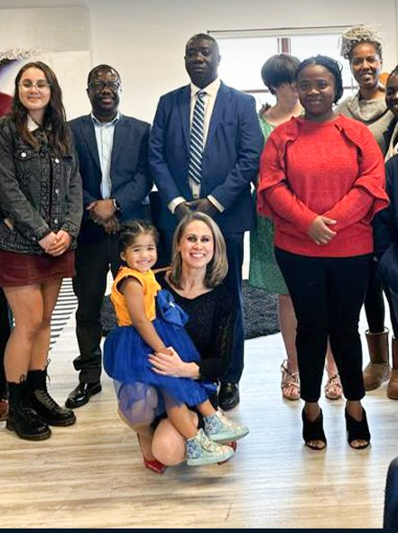

Go
Short-term teams, student internships, professional volunteers, and longer placements as the work develops.
Explore goingAfrica Missions
Serving alongside local churches to proclaim Christ, make disciples, develop leaders, and strengthen communities.
Karis develops mission opportunities that bring believers alongside local churches for evangelism, discipleship, leadership support, and practical service.
The goal is not to create dependence on visiting teams. It is to strengthen the local ministries that remain faithfully present in their communities long after any team has flown home. That shapes everything: who leads, who decides, what we build, and what we leave behind.
Field of Focus
Ghana is our initial field of focus. Expansion into other regions will follow only where there is genuine local partnership, safeguarding, oversight, and readiness, not simply opportunity.
Short-term teams, student internships, professional volunteers, and longer placements as the work develops.
Explore goingStand with local churches, communities, mission teams, and new believers in sustained prayer.
Pray with usChurches, seminaries, and institutions can prepare, endorse, and support the people they send.
Partner with usHelp reduce barriers to participation and resource Gospel-centered ministry responsibly.
Ways to giveLocal pastors and leaders set the priorities. Visiting teams serve those priorities rather than importing their own agenda, however well-intentioned.
Wherever possible, a Gospel conversation should lead into an ongoing relationship with a local congregation, not end at a decision card.
We publish ministry outcomes responsibly and avoid inflated statistics. If we do not know a number, we say so rather than estimate upward.
Dignity, privacy, appropriate boundaries, and safeguarding apply to everyone we serve and everyone who serves with us.

Children are not the church of tomorrow waiting their turn. They can know Christ now, and they can have a real part in His mission now.
Missions for Children runs in two directions: taking the Gospel to children in the places we serve, and helping the children already among us pray, give, and go at the level they are actually at.
Safeguarding comes before everything else on this page. Every adult in a position of trust with children is screened, referenced, and trained before they begin, and no adult is ever alone and unobserved with a child.

Alongside international work, Karis supports local evangelism where our assemblies are already planted: street outreach, neighbourhood visitation, and community events. The printed material our teams use is the same material we make freely available to you.
If your church is planning an outreach, take our tracts, door hangers, and signage artwork and use them. There is no cost and no permission process.